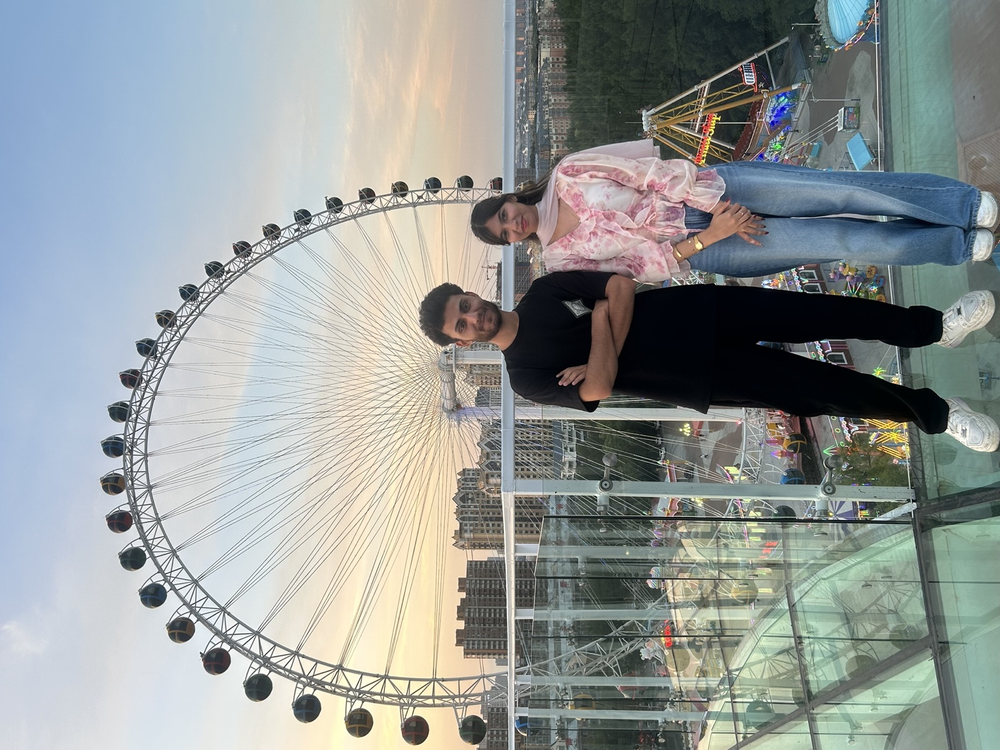

Our Story
How two strangers became everything to each other.
Some of the best things in life arrive completely by chance. There was no plan and no careful setup — we met randomly, in a moment neither of us saw coming. A simple hello that could have been nothing, quietly becoming everything.
I think about how easily we could have missed each other. One different day, one different decision, and I might never have known you. Instead, the universe handed me this bond — and I've come to believe it is one of the greatest blessings of my life.
Thank you for being my person. For the laughter, the long talks, the quiet understanding, and for every single memory we've made so far. There are so many more to make.
“We met completely randomly — and that chance turned out to be one of the best things that ever happened to me.” — Haider, thinking about us
